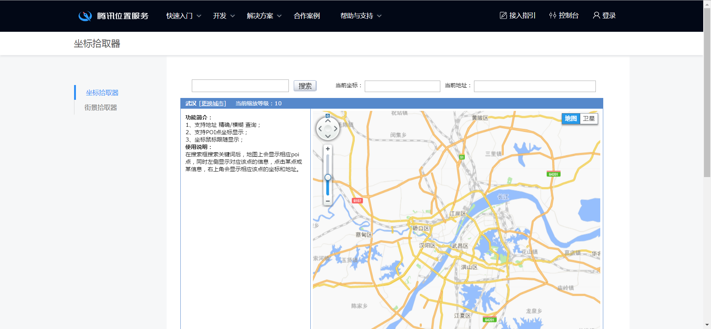
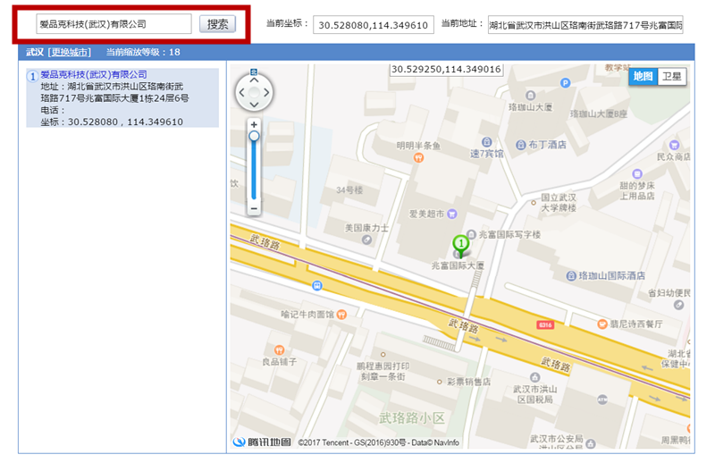
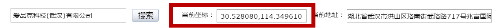
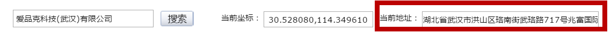

地点标注指南
地点标注主要分为以下九个字段信息：地点名称、地点经度、地点纬度、地点位置、地点类别、地点简介、地点推荐指数、地点联系方式、地点图片。 其中地点名称、地点经度、地点纬度、地点位置、地点类别这五个字段为必填字段，其他四个字段为选填字段。 为了呈现信息的完整性，建议所有字段信息都进行录入。
如何获取地点经纬度信息？
1.打开坐标拾取系统坐标拾取器-腾讯地图，如下图所示：
2.选择地点所在城市，如下图所示（以武汉为例）：

3.输入地点名称，进行搜索获得搜索结果，以下以爱品克公司为例：
4.结果中的坐标信息即为地点的经纬度，其中位于前面的是纬度,后面的是经度信息 地点的经纬度信息是本系统最为关键的信息，必须保证正确。纬度数值较小，一般为30左右，经度数值较大，一般为110左右。可以基于此做初步的判断。 直接将数据复制到标注页面中对应的输入框中即可。示例中，30.528080即为爱品克科技有限公司的纬度，114.349610即为爱品克公司的经度。
5.搜索结果中的当前地址可以作为地点位置这一字段进行使用。或者自行输入地点位置亦可。不做强制要求。
